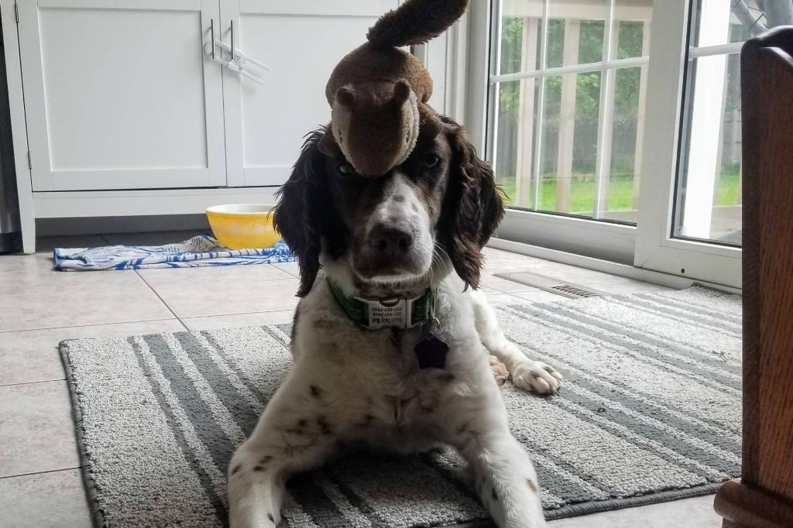

Holly |
Dash |
Bitsy |
|  | ||
|
The last to join the family but the elder sister of the two other puppies, nine-year-old Holly is actually a silly goose who is always pulling off some trick to make everyone's day a little better, like balancing a toy squirrel on her head. |
An old man at heart, Dasheroo goes to bed at reasonable hours (8 P.M. each night) and seeks out the warmest, comfiest spots when the family spends the night outside. |
The youngest of all three, Princess Bitsy is always very picky about the way she presents herself (except when she is begging for treats). Here she is resting after carefully finding the perfect spot on the pillow she knocked to the ground. |